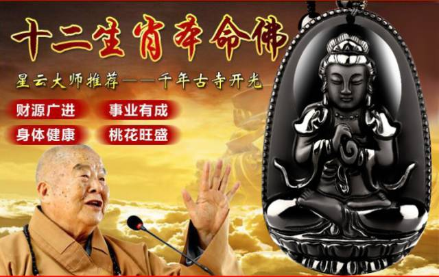
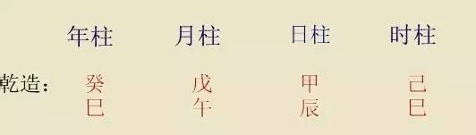
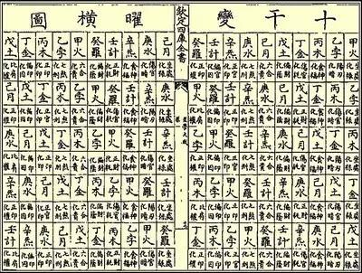
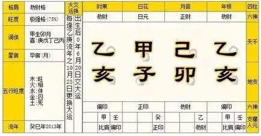
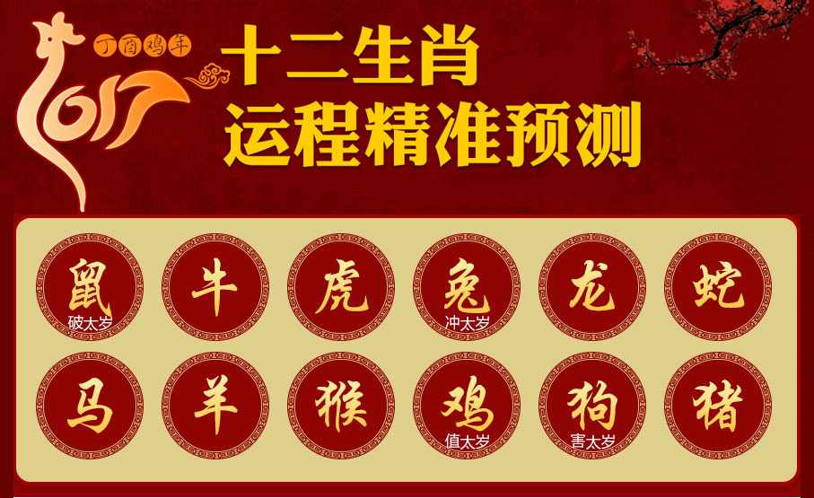
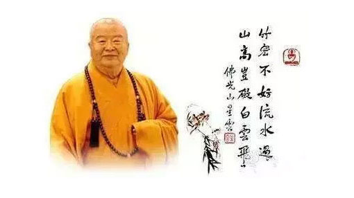
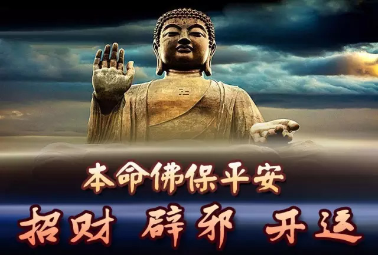
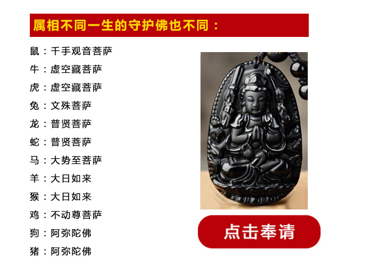

经历了2016年的兴衰与喜忧你是否觉得世事自有注定，亦或人生无常？2017年话说间过去了大半，对于众多缘友来说都是 诸事不顺的，投资失败、家庭不和、小人当道、身体欠安 ……总之生活在夜不寐、食不香，活不乐、死不成的状态之中！
如何摆脱流年不利万事不顺？
看懂星云大师的教诲一切都会改变！！
星云师话禅：
所谓“流年不利”，就是某一年运气不佳，诸事不顺。从四柱命理上讲，一个人的命 运信息，由生辰八字、大运、流年等信息的综合反映。一个人的生辰八字生辰八字能够看出其一生的命运，在一些年头的命运会好一些，有一些年头就会倒霉，这是常有的事，即是所谓流年不利。风水轮流转，运气不还的年份要化解，注意趋吉避凶，把损失降到最低。
1、八字
八字即生辰八字，是一个人出生时的干支历日期。八字在汉族民俗信仰中占有地位，年干和年支组成年柱，月干和月支组成月柱，日干和日支组成日柱，时干和时支组成时柱；一共四柱，四个干和四个支共八个字，故又称四柱八字。
2、大运
大运就是由八字信息排列出来的。顾名思义,大运就是大的运气,每个人从出生后的某一年开始,每10年是一个大运,由一个干支表示,代表了这10年内总的运气好坏.
3、流年
通常所讲八字中用神受制，忌神受生助的年份，往往都流年不利，多有不顺。具体来说,流年指所经历的每一年的天干地支,算哪一年如何就是看这一年的天干地支跟你命局的天干地支的生克结果来看的。
4、2017年12生肖运程
不妨来看看2017年你的流年运程，预见 最好的未来，预防不利的颓运。
依据地支刑冲合害及流年吉神凶煞的理论，2017丁酉鸡年属鼠人破太岁，属兔人冲太岁，属鸡人值太岁又刑太岁，属狗人害太岁， 运势相对较不顺利。属马人虽然不犯太岁，但火克金为以下犯上，压力较大。属牛人与属蛇人与太岁三合，运势相对而言较为顺畅，但伴有小疾。属龙人虽与太岁六 合，但伴君如伴虎，吉凶难测。属虎人有暴败入命，要提防天有不测风云。属羊人披头、丧门来临，平安福气有损。属猴人运势还不错，但去年犯太岁的后遗症要到 立秋后才会结束。属猪人天狗、囚狱入命，提防伤灾官灾。生辰八字里带有子、卯、酉、戌的人也是轻微犯太岁的一种。2017年流年太岁位正西方，岁破位正东 方，这二个方位不宜动土，大门、卧室、睡床、办公室、办公桌等在此位为风水犯太岁，犯之与生肖犯太岁同样严重，也应化解。十二生肖人虔诚奉请属于自己生肖 的本命佛，可得佛法庇佑，化解2017年受灾星干扰而存留的隐患，守护流年化解凶灾，必能逃脱苦难，平安无事。
也有人问，为啥年年都是流年，我就没有走运的时候？难道是“命”？
生活中、磕磕碰碰
总是有很多不大不小灾祸让你疲惫不堪！亲人病痛、老人不和、儿女不孝、烦事不断等等，好像就没有几天安静快乐的日子让你过！
工作中、万事不顺
总是有很多琐碎的事情让你分身乏术！上司刁难、下属不服，同事不和，升迁不顺等等，甚至同样的事情你要花费几倍的努力才能稍有成就，而别的同事就能顺手拈来！
婚姻中、妻离子散
问题也频频出现，三言两语就开始矛盾不断，最后形影单只。
1、多做善事，不行恶
2、顺势而为，不逆天
3、请神保护，易逆转
很多人都把这些不顺归结为：这就是命！自己不幸遇到了一个跌宕起伏、浮沉不定的年份，诸事欠顺，恐有不测之灾
同样的出生，别人是富贵，而你就是贫穷！
同样的遭遇，别人是福气，而你就是霉运！
同样的身体，别人是长寿，而你就是病殃！
同样的机会，别人是得到，而你就是失去！
同样的门槛，别人是中举，而你就是落榜 !
同样的客户，别人是赚钱，而你就是赔钱！
运途殊异
人们在面对这许多不可知的命数时，往往显得茫然无助。感觉冥冥之中早有注定，无论后天怎样挣扎，也只不过是命运玩弄的对象罢了！
其实，你不知道的是，每个人生出生的那一天，便与有缘之佛结缘，佛便会一直护佑着自己， 这就是人们常说的“ 守护神 ”或“ 本命佛”！
本命佛从佛理上说是对应属相的命缘，特别是适逢本命年的时候，佛缘解凶，甚是招吉！从现代心里学上说，本命佛是一种运势的暗示，能起到积极作用。
哪里能请到本命佛？？？ 请认真看以下文字
星云大师开光本命佛
星云大师特别提醒，以下文字请认真查看：
佩戴经过加持开光的本命佛这是富人的日常生活习惯，众多成功人士有今天的成就，本命佛的守护是不能排除的。
然而不同属相的人必须佩戴不同的本命佛，而且是经过开光的特殊材质本命佛，否则没有佛佑。
人们的 富贵贫贱、吉凶祸福，死生寿夭、穷通得失，科场中举、货殖营利，无一不取决于冥冥之中非人类自身所能把握的一种力量，即命运是也。
你知道吗？生肖对个人命运有着至关重要的影响。
12生肖不仅受黄道十二宫磁场的影响，还与二十四节气密切相连，形成十二种不同特质的基因，从而从基因上影响了性格，而性格决定了命运。
今日您有缘走进此网站，星云大师为您揭秘12生肖改运旺运秘法。为您改善跌宕起伏的运势， 摆脱诸事不顺的厄运，化解流年凶灾。
星云大师简介：
星 云大师简介：释星云（1927年8月19日－），俗名李国深，法号悟彻。星云大师为禅宗临济正宗第四十八代传人，是国际著名佛学大师，国际佛光会世界总会 会长 ，佛光山开山宗长，佛光山寺任第一、二、三任主持，南京大学中华文化研究院名誉院长，世界华人大奖终身成就奖，泰国佛教最佳贡献奖 ，曾受到多位国家领导人的会见。星云法师是高僧大德，拥有无上修行，具有超越凡人的智慧，为人处世的典范。
如何请到你的守护神？
根据佛教传承及“金、水、木、火、土”五大元素相生关系推出的十二属相之八尊护佑佛，是与十二属相者磁场最接近、感应力最强的属相护佑佛。若能虔诚敬奉，能使您逢凶化吉、平安如意、事业顺利、家庭幸福。朋友们若要请这些吉祥物请一定要按照自己的属相来请。
本命佛照片见上面图例。举例：假如你属猪，那么，建议你请阿弥陀佛，佩戴或者可挂在你的车上或者放在你的手包中。如此，你的财运事业、情感婚姻以及健康学业官运等能趋利避害、风生水起好运来。
本命佛全部经过星云大师开光，长期佩戴能够清除负能量，经过正统开光的本命佛守护神，长期佩戴能够清除负能量，让佩戴者在生活中逢凶化吉，在琐事中心如止水，有助于静气宁神，使睡眠更加安稳。
生肖本命佛如未经开光加持，则未开光明，未开六神通，只能作为普通的饰品、工艺品佩戴、摆放。
特别提醒:
本命佛不分男女、不限本命年，均可终身佩戴敬奉！
财运
佩戴十二生肖本命佛能增强财星的活力，招财旺财，不久会有横财到手。
事业运
本命佛可以帮你清除事业上面的障碍，工作上让你遇到贵人，帮助你在事业上出现进一步发展的契机。
健康运
现代人工作疲惫、应酬较多火土之气淤积，脾胃疾病在所难免。生肖守护神能祛除邪气晦气，使人保持一颗平和的心态，不易滋生暗疾。
感情运
恋爱困难、夫妻矛盾、感情不顺的人佩戴十二生肖本命佛，能改变自身的气场，增强催旺桃花，巩固自身的爱情， 异性缘也大大增。
【本 命 佛】+【黑曜石】+【正统开光】=3倍正能量
星云大师：
宣扬佛法，行善积德！开光本命佛！
南无阿弥陀佛！感恩！合十！
附带权威机构材质鉴定证书
为了让广大佛友奉请到正品天然材质的黑曜石本命佛，梵轩阁工作人员特携本命佛到国家权威机构检测并出具了鉴定证书，每一尊本命佛均有防伪材质鉴定，现佛友可放心奉请，阿弥陀佛！
【梵轩阁提示：本命佛需在正规寺院 结缘材质方可有保证，谨防合成玻璃！】
星云大师为“本命佛”开光诵经、佛法加持 ，每一位看见的人，都有机会得到佛法加持，让佩戴者福佑在身。
经星云大师开光加持过的本命佛帮助结缘者修福修慧！清净内心，开运改运，镇妖辟邪，出入平安，逢凶化吉 ，从而帮助改善生活、事业、财运、爱情、精神等一系列善果。为了祈福众生，积德行善，梵轩阁在结缘日举办公益活动，活动期间每尊本命佛仅需结缘价198元，活动结束，即恢复原价1988元！
1、"梵轩阁2017祈福众生"活动，期间每尊本命佛原价1988，回馈广大缘主 结缘价 198 元，数量有限！要请从速！！
2、每一尊本命佛通过梵轩阁开光加持（奉请两尊或两尊以上的施主赠送价值198元南海砗磲手链一个）
3、全国货到付款，免邮费！
佛法庄严！请您本着善意，在提交订单前确认请购意向！
星云大师忠告：
一年一开花，十年一轮回！今年不转运再等十年。十年不转运再等一甲子 （60年）
版权所有：梵轩阁@[佛文化领导品牌]
热爱伟大祖国 卐 维护民族团结
弘扬传统文化 卐 促进社会和谐